Tiilen hiontapalikka
Käytä palikan tekoon karkeata esim no.280 santapaperia. Poista suojapaperi
itsetarttuvasta santapaperista ja kiinitä santapaeri palikkaan.
[Tuo ohje
on amerikkalaiseen ympäristöön. Meillä on luontevampaa kaäyttää puupalikkaa
ja tavallista santapaperia joka liimataan kontaktiliimalla. Sivele kontaktiliima
ohuesti ja tasaisesti kumpaankin pintaan.
Odota että liima on kuivunut tahmeaksi ja paina pinnat yhteen.]
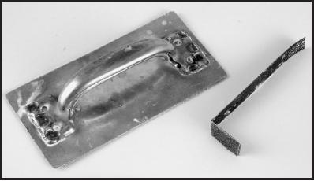
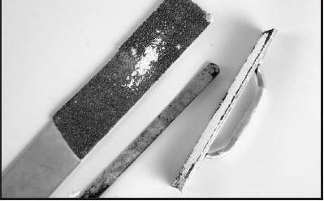
hiontapalikan teko
Pieniä alueita ja nurkkia varten voit tarvita hyvin pienen palikan.
pakkaukseen käytetystä teräsvanteesta voi tehdä hyvän mini-hiomapalikan.
taivuta vanne sopivasta kohdasta 90 asteen mutkalle. jätä suoraa osaa haluamasi määrä.
Kiinnitä santapaperi suoraan osaan kuten edellä.
Vaurioituneen tiilen korjaaminen
harjoittele korjaamista ensin eristystiilen hukkapalalla.
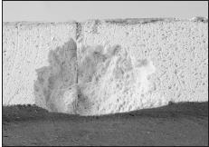
Korjaa näin reunatiili,
jonka kansi on lohkaissut pahasti
1. Rajaa rautasahan terällä sahaamalla tiileen suoraseinäinen alue vaurion ympäri.
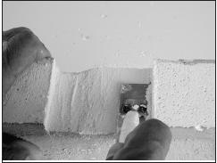
Kolon tasottaminen
2. Rautasahan terällä tai hiontapalikalla tasaa kokon pohja sahausten välissä tasaiseksi ja sileäksi. Pieneen koloon tarvitset pinoisen hiontavälineen.
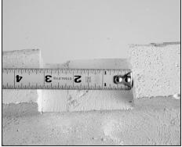
Täytepalan mittaaminen
3. Kun kolo on sileä, tee eristystiilen palsta siihen sopiva täytepalikka.
Sen pitää olla hivenen pienempi, niin että sauman leveydeksi jää alle 2 mm joka puolella.
Kannattaa käyttää aikaa huolelliseen sovittamiseen. Liian paksu sauma halkeaa lämmön
vaihtelussa.
4. Poista pöly huolellisestisiveltimellä tai imuroimalla tai ilmapuhalluksella.
(muista käyttää suojalaseja ilmapuhalluksessa)
5. Sumuta suikepullolla hieno vesisumu kaikkiin tarttumapintoihin.
6. Ennenkuin vesi ehtii kuivua, pyyhi sienellä laastia kaikkiin tartuntapintoihin.
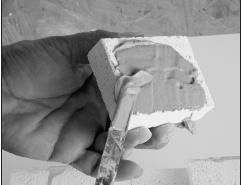
7. Paina korjauspalikka paikoilleen tiukasti. Älä liikuta sitä sen jälkeen kun tartuntapinnat ovat kohdakkain. Pidä sitä paikoillaan minuutti.
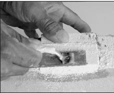
8. Pyyhi liika lassti pois kun se vielä on tuoretta. Annan kuivua 24 tuntia.
Lopuksi hio pinta sileäksi jos on tarpeen.
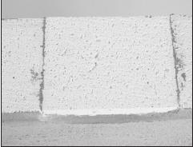
Valmis paikkaus
Poratun reiän tulppaaminen
Voit myös tehdä tulpan, joka sovitetaan porattuun reikään.
1. Sa
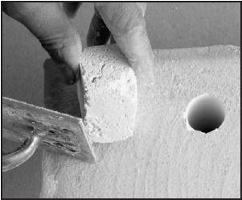
Poraamalla siistitty kolo
Sahaa tiilestä palikka, joka on pituudeltaan uunin seinämän mittainen ja hiukan
paksumpi kuin poratun reiän mitta.
2. Hiomapalikalla pyöristä tappi. Sen pitäisi olla 2-3 mm ohuempi kuin reikä.
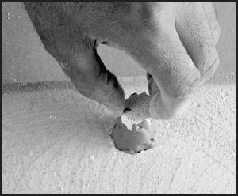
Kolon tapittaminen
3. Päällystä tulppa laastilla ja työnnä se reikään kunnes pinta on tasan. Pyyhi pois liika laasti. Tarvittaessa hio sileäksi.
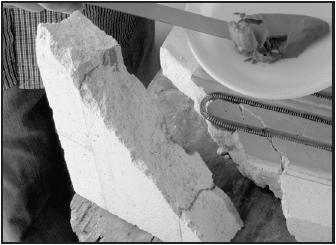
sivele kontaktipinnat laastilla
3. Sivele laastia kontaktipinnoille ripeästi ennenkuin vesi kuivuu.
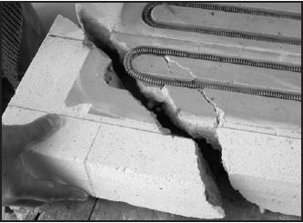
4. Paina pala tiukasti paikoilleen. Älä anna sen liikkua sen jälkeen kun kontaktipinnat oavt
tarttuneet yhteen. Pidä palaa paikoillaan minuutin ajan.
5. Anna kuivua 24 tuntia. Lopuksi hionta, jos se on tarpeen.
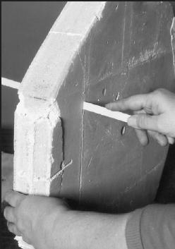
Kannen reunasta sahataan vaurioitunut osa pois
1. Ensiksikin pintojen pitää sopia niin hyvin kuin mahdollista. Hio ensin kotaktipinnat,
ja sitten hankaa pintoja vastakkain kunnes ne liukuvat takertelematta. Imuroi kaikki pinnat.
2. kaada laastia laakeaan astiaan.
3. Älä kostuta kontaktipintoja. Sitä ei tarvita, koska tiilen kastaminen laastiin
saat koko pinnalle laastin hetkessä ja sinulle jää riittävästi aikaa työskennellä.
Kasta vain toine kontaktipinnoista laastiin. Jätä toinen kuivaksi.
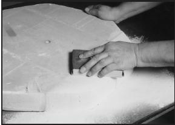
Paina laastitut uudet tiilet paikoilleen
4. Laastiin kastamisen jälkeen älä pyyhi pois liikalaastia. Ei tarvitse myöskään huolestua jos laastia
ei ole tarttunut koko pinnalle, kunhat reunat ovat laastin peitossa.
5. Liuta kontaktipinnat yhteen. Jos veden määrä laastissa on oikea, ne liukuvat
helposti yhteen. Saadaksesi kyllin ohuen - 2-3 mm - sauman, liuta tiilet yhteen ja erilleen
pari kolem kertaa. Joka kerralla saumasta tulee ohuempi. hetken kuluttya liuttaminen
muuttuu vaikeaksi. Laasti on alkanut kovettua. Älä enää liikuta tiiliä.
6. Anna kovettua. 24 tunnin kuluttua voit nostaa liitettyjä tiiliä vaaratta.
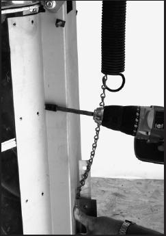
Viimeistele korjaus kuivumisen jälkeen